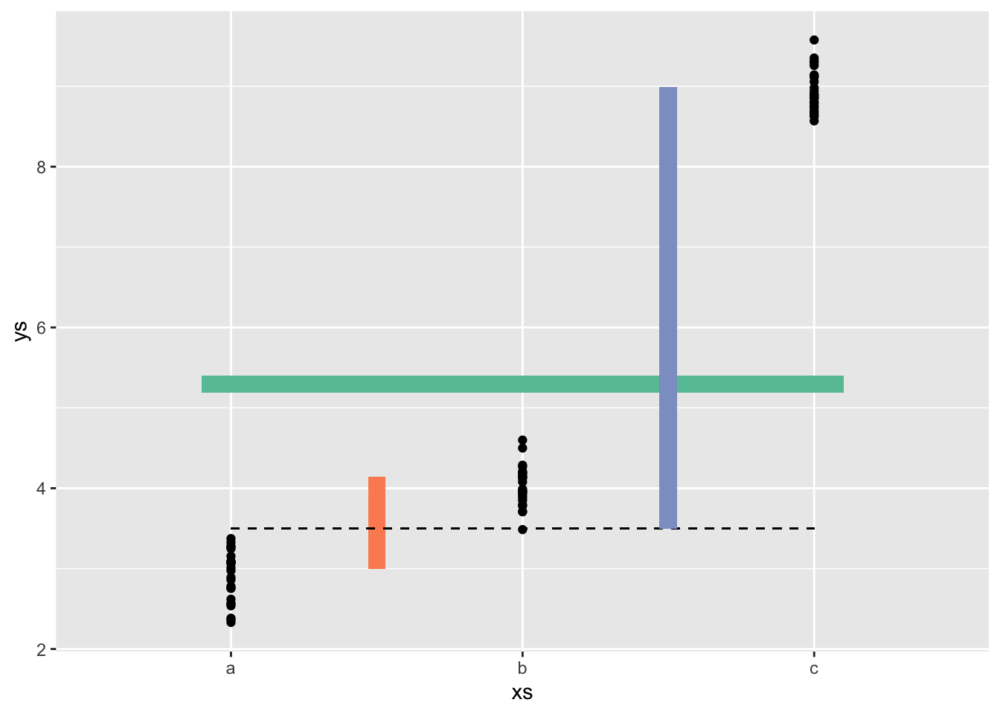
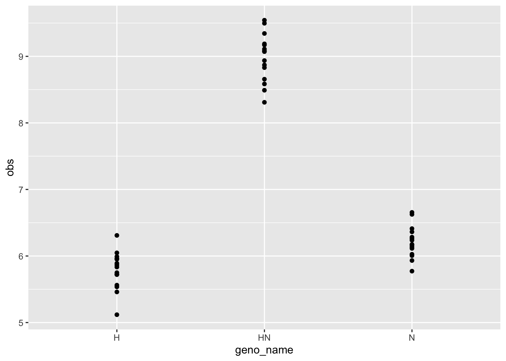
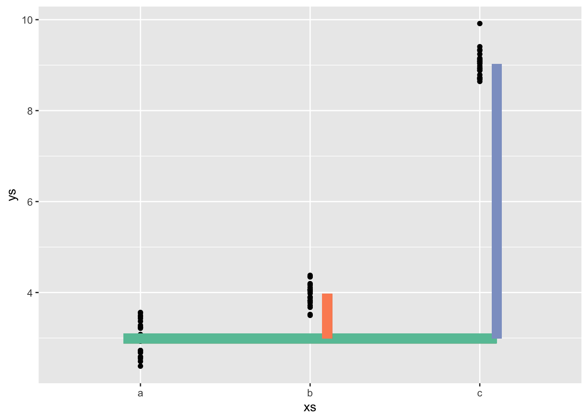
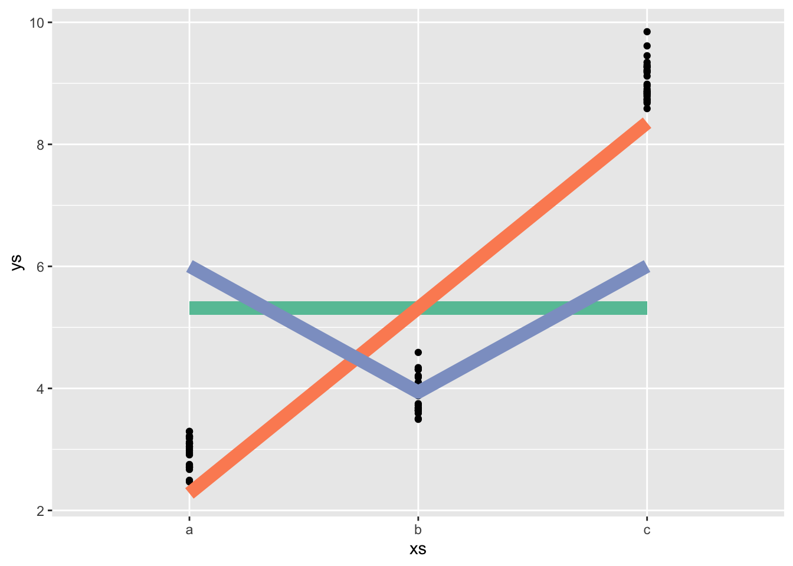
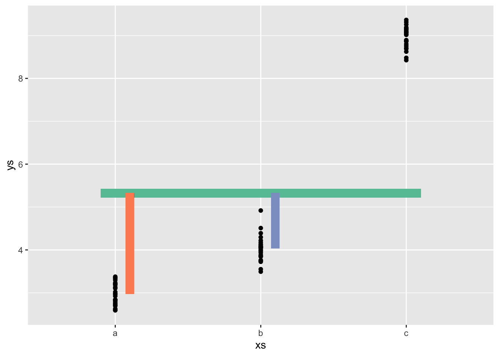
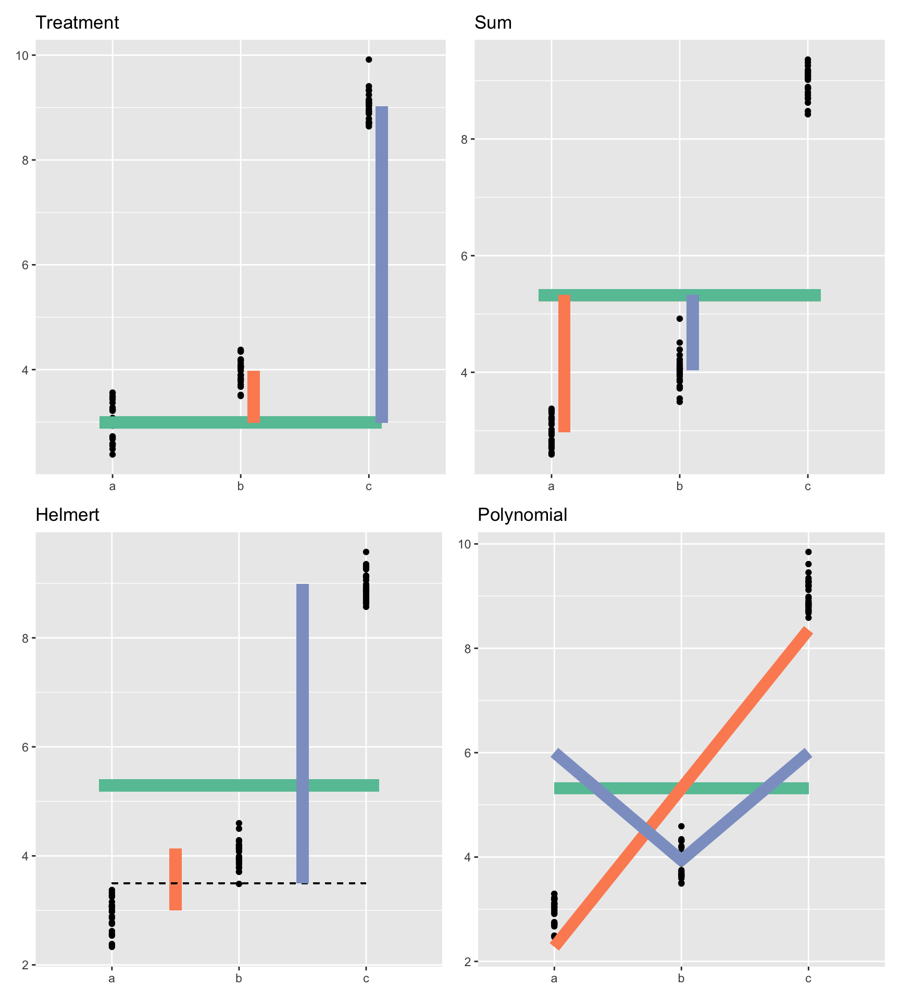

library(targets)
library(ggplot2)
library(tidyverse)
library(tidybayes)means <- c(3,4,9)
neach <- 25
ys <- rnorm(n = neach*length(means), mean = rep(means, each = neach), sd = .3)
xs <- rep(letters[1:length(means)], each = neach)
mod <- lm(ys ~ xs)xs <- as.factor(xs)
contrasts(xs) <- contr.helmert(3)
contrasts(xs) <- sweep(contr.helmert(3), MARGIN = 2, STATS = 2:3, FUN = `/`)
sweep(matrix(1, nrow = 4, ncol = 3), MARGIN = 2,STATS = 1:3, FUN = `/`) [,1] [,2] [,3]
[1,] 1 0.5 0.3333333
[2,] 1 0.5 0.3333333
[3,] 1 0.5 0.3333333
[4,] 1 0.5 0.3333333mod_helm <- lm(ys ~ xs)
summary(mod_helm)
Call:
lm(formula = ys ~ xs)
Residuals:
Min 1Q Median 3Q Max
-0.56666 -0.18801 -0.03627 0.17782 0.62273
Coefficients:
Estimate Std. Error t value Pr(>|t|)
(Intercept) 5.29433 0.03218 164.50 <2e-16 ***
xs1 1.13516 0.07883 14.40 <2e-16 ***
xs2 5.48811 0.06827 80.39 <2e-16 ***
---
Signif. codes: 0 '***' 0.001 '**' 0.01 '*' 0.05 '.' 0.1 ' ' 1
Residual standard error: 0.2787 on 72 degrees of freedom
Multiple R-squared: 0.9893, Adjusted R-squared: 0.989
F-statistic: 3335 on 2 and 72 DF, p-value: < 2.2e-16mean(ys)[1] 5.294333means[2] - means[1][1] 1means[3] - mean(means[1:2])[1] 5.5Helmert contrasts
suppressPackageStartupMessages(library(tidyverse))
# plot the means
hh <- coef(mod_helm)
cc <- RColorBrewer::brewer.pal(3, "Set2")
helmert <- tibble(xs, ys) |>
ggplot(aes(x = xs, y= ys)) +
geom_point() +
stat_summary(fun.data = mean_cl_normal, col = "red") +
geom_segment(aes(x = 1.5,
xend = 1.5,
y = means[1],
yend = means[1] + hh[2]),
lwd = 4, col = cc[2]) +
geom_segment(x = .9, xend = 3.1,
yend = hh[1],
y = hh[1], lwd = 4, col = cc[1]) +
geom_segment(aes(x = 1, xend = 3,
y = mean(means[1:2]),
yend = mean(means[1:2])), lty = 2) +
geom_segment(aes(x = 2.5, xend = 2.5,
y = mean(means[1:2]),
yend = mean(means[1:2]) + hh[3]),
col = cc[3], lwd = 4)
helmertWarning: Computation failed in `stat_summary()`
Caused by error in `fun.data()`:
! The package "Hmisc" is required.
build a group of 3 this way:
contr.helmert.unscaled <- function(n){
sweep(contr.helmert(n), MARGIN = 2, STATS = 2:n, FUN = `/`)
}
cmat <- contr.helmert.unscaled(3)
grand_mean <- 7
diff_parents <- .5
nonadd_hybrid <- 3
geno_simulation <- tibble(geno_name = c("H", "N", "HN"),
geno_id = 1:3,
n = 15) |>
uncount(n) |>
mutate(b0 = 1,
b1 = cmat[geno_id, 1],
b2 = cmat[geno_id, 2],
avg = b0 * grand_mean + b1 * diff_parents + b2*nonadd_hybrid,
obs = rnorm(length(avg), mean = avg, sd = .3))
geno_simulation |>
ggplot(aes(x = geno_name, y = obs)) +
geom_point()
default contrasts
means <- c(3,4,9)
neach <- 25
ys <- rnorm(n = neach*length(means), mean = rep(means, each = neach), sd = .3)
xs <- rep(letters[1:length(means)], each = neach)
mod <- lm(ys ~ xs)
coefs_trt <- coef(mod)
treatment <- tibble(xs, ys) |>
ggplot(aes(x = xs, y= ys)) +
geom_point() +
stat_summary(fun.data = mean_cl_normal, col = "red") +
geom_segment(x = .9, xend = 3.1,
yend = coefs_trt[1],
y = coefs_trt[1], lwd = 4, col = cc[1]) +
geom_segment(x = 2.1,
xend = 2.1,
y = coefs_trt[1],
yend = coefs_trt[1] + coefs_trt[2],
lwd = 4, col = cc[2]) +
geom_segment(x = 3.1,
xend = 3.1,
y = coefs_trt[1],
yend = coefs_trt[1] + coefs_trt[3],
col = cc[3], lwd = 4)
treatmentWarning: Computation failed in `stat_summary()`
Caused by error in `fun.data()`:
! The package "Hmisc" is required.
Polynomial contrasts
means <- c(3,4,9)
neach <- 25
ys <- rnorm(n = neach*length(means), mean = rep(means, each = neach), sd = .3)
xs <- ordered(rep(letters[1:length(means)], each = neach))
mod <- lm(ys ~ xs)
contr_vals <- contrasts(xs)
coefs_lin <- coef(mod)
polyfig <- tibble(xs, ys) |>
ggplot(aes(x = xs, y= ys)) +
geom_point() +
stat_summary(fun.data = mean_cl_normal, col = "red") +
geom_segment(x = 1, y = coefs_lin[1], xend = 3, yend = coefs_lin[1], lwd = 4, col = cc[1]) +
geom_line(aes(x = x, y = y),
data = data.frame(x = 1:3,
y = contr_vals[,1][]*coefs_lin[2] + coefs_lin[1]),
lwd = 4, col = cc[2]) +
geom_line(aes(x = x, y = y),
data = data.frame(x = 1:3,
y = contr_vals[,2][]*coefs_lin[3] + coefs_lin[1]),
lwd = 4, col = cc[3])
polyfigWarning: Computation failed in `stat_summary()`
Caused by error in `fun.data()`:
! The package "Hmisc" is required.
sum contrasts
means <- c(3,4,9)
neach <- 25
ys <- rnorm(n = neach*length(means), mean = rep(means, each = neach), sd = .3)
xs <- factor(rep(letters[1:length(means)], each = neach))
contrasts(xs) <- contr.sum(3)
mod <- lm(ys ~ xs)
summary(mod)
Call:
lm(formula = ys ~ xs)
Residuals:
Min 1Q Median 3Q Max
-0.54245 -0.18690 0.02279 0.18022 0.88346
Coefficients:
Estimate Std. Error t value Pr(>|t|)
(Intercept) 5.32356 0.03108 171.31 <2e-16 ***
xs1 -2.34976 0.04395 -53.47 <2e-16 ***
xs2 -1.28808 0.04395 -29.31 <2e-16 ***
---
Signif. codes: 0 '***' 0.001 '**' 0.01 '*' 0.05 '.' 0.1 ' ' 1
Residual standard error: 0.2691 on 72 degrees of freedom
Multiple R-squared: 0.9899, Adjusted R-squared: 0.9896
F-statistic: 3523 on 2 and 72 DF, p-value: < 2.2e-16coefs_sum <- coef(mod)
contrsum <- tibble(xs, ys) |>
ggplot(aes(x = xs, y= ys)) +
geom_point() +
stat_summary(fun.data = mean_cl_normal, col = "red") +
geom_segment(x = .9, xend = 3.1, y = coefs_sum[1], yend = coefs_sum[1],
lwd = 4, col = cc[1]) +
geom_segment(x = 1.1,
xend = 1.1,
y = coefs_sum[1],
yend = coefs_sum[1] + coefs_sum[2],
lwd = 4, col = cc[2]) +
geom_segment(x = 2.1,
xend = 2.1,
y = coefs_sum[1],
yend = coefs_sum[1] + coefs_sum[3],
col = cc[3], lwd = 4)
contrsumWarning: Computation failed in `stat_summary()`
Caused by error in `fun.data()`:
! The package "Hmisc" is required.
library(patchwork)
(
(treatment +
labs(title = "Treatment") +
theme(axis.title = element_blank())
) + contrsum +
labs(title = "Sum") +
theme(axis.title = element_blank())
) / (
(helmert +
labs(title = "Helmert") +
theme(axis.title = element_blank())) +
(polyfig +
labs(title = "Polynomial") +
theme(axis.title = element_blank()))
)Warning: Computation failed in `stat_summary()`
Computation failed in `stat_summary()`
Computation failed in `stat_summary()`
Computation failed in `stat_summary()`
Caused by error in `fun.data()`:
! The package "Hmisc" is required.